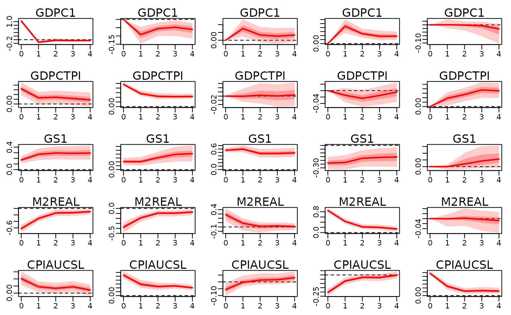
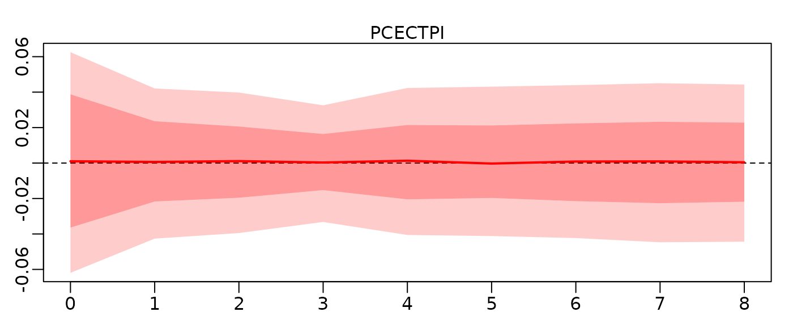
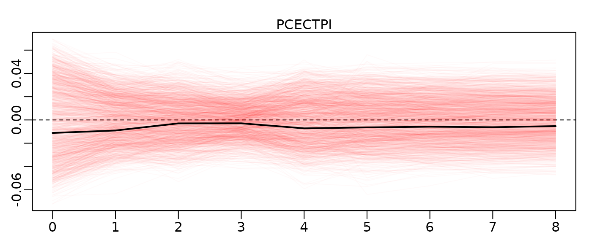

Compute Impulse Response Functions to Structural Shocks using **bayesianVARs**
Stefan Haan1
Source:vignettes/irf-vignette.Rmd
irf-vignette.RmdIntroduction
The structural VAR model of order assumes the vector-valued observations are generated by the process2 The components of are required to be uncorrelated (i.e., the variance-covariance matrix is a diagonal matrix) and referred to as structural shocks.
The model parameter is not identified. The model deserves to be called “structural”, only if reflects the instantaneous causal relationships between the variables. Theoretical considerations are used to place restrictions on the entries of (Lütkepohl 2005, sec. 10.2.2). Following (Rubio-Ramírez, Waggoner, and Zha 2010) and (Arias, Rubio-Ramírez, and Waggoner 2014), in order to identify , we allow the user to specify identifying zero and sign restrictions for several transformations of the structural parameters:
- itself,
- the contemporaneous effects ,
- the structural coefficients , and
- the long-run effects (sum of the impulse responses over all horizons )
An impulse response function describes the effects of an shock to the system over time. Intuitively, IRFs answer the question: “What is the effect of a shock hitting the system at time on for , given that no other shocks hit the system?” (Koop, Pesaran, and Potter 1996). Formally, we define IRFs as the Jacobian
If the (homoskedastic) factor model is used, we define the impulse reponses with respect to innovations in the factors instead: In this case, identification of the IRFs is achieved by zero and sign restrictions on the factor loadings (which are also the contemporaneous effects ) and/or the long-run effects.
One outstanding feature of bayesianVARs is the
ability to account for time-varying innovation variances using the
stochastic volatility models implemented in
stochvol and factorstochvol (Gruber
2024). For these models however, all columns of
are already identified up to sign (Lütkepohl et al. 2024). This result
generalizes to the VAR model with factor stochastic volatility (Haan 2025, Theorem
2). If a heteroskedastic model is fitted with bvar
(the default), the function irf uses the estimated
innovation variances at time
.
Usage examples
We present several practical examples in R that show how bayesianVARs can be used to obtain IRFs. The example Optimism shocks is intended to show typical usage and reproduces Figure 4(a) from (Arias, Rubio-Ramírez, and Waggoner 2014). In the example A Monetary SVAR we show how to relax restrictions that cannot be satisfied. In particular, we replace a zero restriction with a custom “approximately zero restriction” using rejection sampling.
Optimism shocks
(Beaudry, Nam, and Wang 2011) analyze the relevance of optimism shocks on business cycle phenomena such as a boom in output, investment, consumption, and hours worked. (Beaudry, Nam, and Wang 2011) propose several identification schemes for optimism shocks. All identification schemes have in common that an optimism shock should be associated with an increase in stock prices. Additionally, the optimism shock should not be associated with improvements in technology (measured by total factor productivity) or expansionary monetary policy, which can be competing causes for an increase in stock prices. The most agnostic identification scheme imposes only a zero restriction on productivity and a positive sign restriction on stock prices on the contemporaneous effects.
(Arias, Rubio-Ramírez, and Waggoner 2014) criticize the approach used by (Beaudry, Nam, and Wang 2011) to calculate the IRFs for its upward bias and artificially narrow confidence intervals, and come to the conclusion that the reported results are not significant, if the IRFs are drawn from the correct distribution. (Wang and Woźniak 2025) replicate this using the R package bsvarSIGNs. In this example we replicate this result once more using bayesianVARs.
First, we load the optimism dataset from the
bsvarSIGNs package.
library(bsvarSIGNs)
data(optimism)We then fit a homoskedastic model using bayesianVARs.
library(bayesianVARs)
prior_sigma <- specify_prior_sigma(
M = ncol(optimism),
type = "cholesky",
cholesky_heteroscedastic = FALSE
)
mod <- bvar(optimism * 100, lags = 4L, prior_sigma = prior_sigma)We construct following matrix describing the zero and sign restrictions on the contemporaneous effects.
show(restrictions)## shock1 shock2 shock3 shock4 shock5
## productivity 0 NA NA NA NA
## stock_prices 1 NA NA NA NA
## consumption NA NA NA NA NA
## real_interest_rate NA NA NA NA NA
## hours_worked NA NA NA NA NAHere, NA signifies an unrestricted parameter,
0 a zero restriction on the parameter and 1
imposes a positive sign restriction. Since shocks 2-5 are not
identified, we calculate IRFs only for the first shock.
## [,1]
## [1,] 1
## [2,] 0
## [3,] 0
## [4,] 0
## [5,] 0
struct_restr <- specify_structural_restrictions(
mod,
restrictions_B0_inv_t = restrictions
)
shock1_irf <- irf(
mod,
ahead = 40,
structural_restrictions = struct_restr,
shocks = shock1
)
plot(shock1_irf, quantiles = c(0.16, 0.50, 0.84))IRFs to an one standard-deviation optimism shock.
The 68% confidence intervals we compute resemble the intervals shown in (Arias, Rubio-Ramírez, and Waggoner 2014, Figure~4(a)). We can see that the confidence intervals of consumption and hours worked include zero at all times. The optimism shock identified in this manner has therefore no statistically significant effect on any of the these variables in our model. Stock prices seem to be highly persistent, with significant effects for at least 40 periods after the initial shock.
A Monetary SVAR
(Rubio-Ramírez, Waggoner, and Zha 2010) show that a five-variable structural VAR model of monetary policy is globally identified, if some normalization rule for the signs of the structural parameters exists and the following zero restrictions on are imposed: Variables:
- … gross domestic product (GDP)
- … GDP deflator
- … nominal short-term interest rate
- … M3 money supply
- … commodity prices
Shocks:
- PS … production sector
- MP … monetary policy
- MD … money demand
- Inf … information in the commodity market
bayesianVARs will report an error, if one attempts to calculate the IRFs to the structural shocks identified by the restrictions above:
train_data <- 100 * usmacro_growth[
, c("GDPC1", "GDPCTPI", "GS1", "M2REAL", "CPIAUCSL")
]
prior_sigma <- specify_prior_sigma(
M = ncol(train_data),
type = "cholesky",
cholesky_heteroscedastic = FALSE
)
mod <- bvar(train_data, lags = 5L, prior_sigma = prior_sigma)
restrictions_B0 <- rbind(
c(1 ,NA,0 ,NA,NA),
c(0 ,1 ,0 ,NA,NA),
c(0 ,0 ,1 ,NA,NA),
c(0 ,0 ,NA,1 ,NA),
c(0 ,0 ,0 ,0 ,1 )
)
restrictions <- specify_structural_restrictions(
mod,
restrictions_B0 = restrictions_B0
)
irf1 <- irf(mod, ahead = 4, structural_restrictions = restrictions)## Error in `irf()`:
## ! The restrictions could not be satisfiedHow can we deal with this situation? One option is to relax one of the zero restrictions to an “approximately zero” restriction. Good candidates for the zero restriction on to be relaxed are any of the restrictions in column two (“PS” shock) or three (“MP” shock). Note that if we drop any of those restrictions, the number of zeros does not exceed those of a triangular matrix and bayesianVARs should be able to find structural parameters.
bayesianVARs does not implement “approximately zero” restrictions, but the desired behavior can be achieved by estimating a slightly larger model and then conditioning on the restriction by rejecting all posterior samples which do not meet it.3
First, we draw a much large number of reduced form samples, knowing most of them will be rejected.
mod <- bvar(
train_data, lags = 5L, draws = 20*3000, prior_sigma = prior_sigma
)We then obtain samples for the structural parameter , dropping the zero restriction “”. This can be thought of allowing the contemporaneous effect to be different than zero.
restrictions_B0_relaxed <- rbind(
c(1 ,NA,0 ,NA,NA),
c(0 ,1 ,0 ,NA,NA),
c(0 ,NA,1 ,NA,NA),
c(0 ,0 ,NA,1 ,NA),
c(0 ,0 ,0 ,0 ,1 )
)The relaxed restrictions have columns with zero restrictions and exactly one sign restriction per column. In this case, an unique solution exists for every reduced-form draw.
restrictions_relaxed <- specify_structural_restrictions(
mod, restrictions_B0 = restrictions_B0_relaxed
)
irf_relaxed <- irf(
mod, ahead = 4,
structural_restrictions = restrictions_relaxed
)
B0_relaxed <- extractB0(irf_relaxed)Find the samples which fulfill the approximately zero condition and make sure enough are remaining.
## [1] 4896Finally, plot the IRFs, conditional on
B0_31_approx_zero:
irf_conditional <- irf_relaxed[,,,B0_31_approx_zero]
class(irf_conditional) <- class(irf_relaxed)
plot(irf_conditional)
Joint credible regions
(Inoue and Kilian 2022) criticize the common practice of plotting the point-wise quantiles of the IRFs, like we did in the previous examples. They draw attention to the fact, that that the point-wise posterior median (or mean) is not necessarily equal to any of the impulse response vectors that satisfy the identifying restrictions.
Following (Inoue and Kilian 2022, sec. 2.4), we allow the user to visualize the joint credible set by sorting all IRF draws in ascending order of and plotting only the first draws. We use absolute loss for the loss function . The draw with the smallest value of is referred to as the Bayes estimator (shown as the black trajectory in the plot below).
Consider the following example, in which we deliberately do not use
any sign-normalization: Using bayesianVARs, we estimate
a two factor model on the entire usmacro_growth dataset,
containing 21 variables.
prior_sigma <- specify_prior_sigma(
M = ncol(usmacro_growth),
type = "factor",
factor_factors = 2,
factor_restrict = "none",
factor_heteroskedastic = FALSE
)
mod <- bvar(100 * usmacro_growth, lags = 5L, prior_sigma = prior_sigma)We require the first factor shock to have no long-run effects on the level of GDP,4 but do not impose any other identifying restrictions.
show(restrictions_long_run_ir)## factors
## vars [,1] [,2]
## GDPC1 NA NA
## PCECC96 NA NA
## GPDIC1 NA NA
## PRFIx NA NA
## INDPRO NA NA
## CUMFNS NA NA
## SRVPRD NA NA
## CE16OV NA NA
## AWHMAN NA NA
## PCECTPI NA NA
## GDPCTPI NA NA
## GPDICTPI NA NA
## CPIAUCSL NA NA
## CES2000000008x NA NA
## FEDFUNDS NA NA
## GS1 NA NA
## GS10 NA NA
## M2REAL NA NA
## EXUSUKx NA NA
## UMCSENTx NA NA
## S&P 500 NA NA
restr <- specify_structural_restrictions(
mod,
restrictions_long_run_ir = restrictions_long_run_ir,
)
shock1 <- diag(2)[, 1, drop = FALSE]Because our identification scheme admits sign switches, roughly half
of all trajectories have opposite signs and the medians turn out to be
about zero for all time horizons. Yet, zero would be a bad estimate: The
trajectory plot (with hairy=TRUE) reveals that our model
predicts a statistically significant effect, we are just unsure about
its sign.
x <- irf(mod, hairy = FALSE, structural_restrictions = restr, shocks = shock1)
plot(x, vars = "PCECTPI")
x <- irf(mod, hairy = TRUE, structural_restrictions = restr, shocks = shock1)
plot(x, vars = "PCECTPI", quantiles=0.68, default_hair_color = "#FF000005")